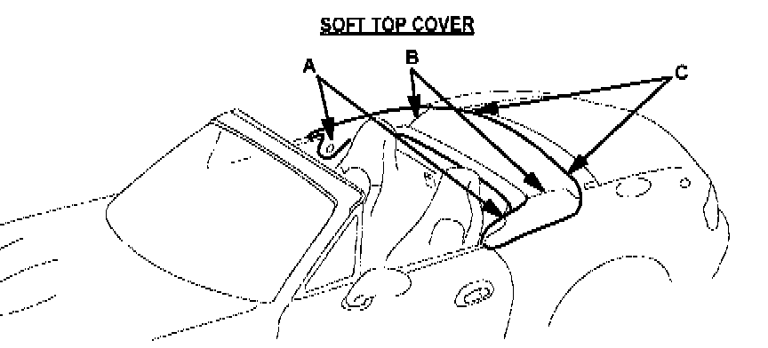

Soft Top - Comes Off/Tears
Bulletin No.: 007/99Issued: 05/21/99
Revised:
Section
09
Applicable Model/s
1999 Miata
Subject
SOFT TOP COVER COMES OFF OR BREAKS
APPLICABLE MODEL(S)/VINS
All 1999 Miatas with VINs lower than JM1 NB353* XO 119960.
DESCRIPTION
The soft top cover may exhibit the following conditions:
A. Soft top may tear when trying to remove it due to fasteners connecting too tightly.
B. Soft top cover cloth gradually comes apart at the seams due to wind pressure.
C. Soft top cover fastener(s) may fly off from wind pressure while driving.
A modified part is available which has been reinforced, stitched at the seams, and shorten for a tighter fit. Customers having this concern should have their vehicle repaired using the following procedure.
REPAIR PROCEDURE
1. Verify customer concern.

2. Replace soft top cover with modified part.
3. Verify repair.

PART(S) INFORMATION
WARRANTY INFORMATION
Note
^ This information applies to verified customer complaints on vehicles covered under normal warranty. Refer to the SRT microfiche for warranty term information.
Warranty Type A
Symptom Code 92
Damage Code 9A
Part Number Main Cause NC1O R1 960C
Quantity 1
Operation Number/Labor Hours S21O9XRX / 0.2